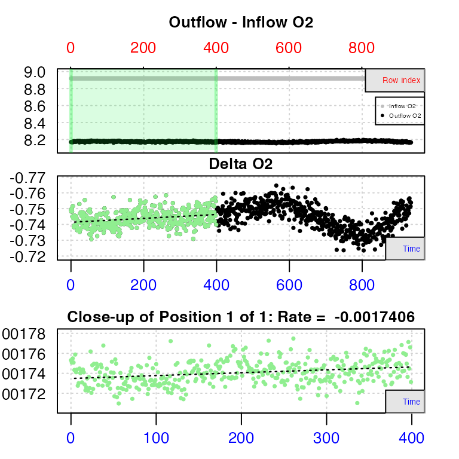

Flowthrough respirometry differs from other methods in that change in oxygen is measured from a controlled continuous flow of water through a respirometer, rather than a known volume, typically after the system has achieved equilibrium. In this method, two oxygen concentrations are needed; ‘downstream’ and ‘upstream’ of the experimental chamber, or the outflow and inflow concentrations. These are used to calculate an oxygen delta (outflow minus inflow values), and this is used with the flowrate to calculate oxygen consumption or production rates.
The inflow concentration can be a simultaneous recording, but is often a known, generally unvarying value such as fully air-saturated water, or water from a header tank of controlled oxygen concentration, and so not continuously monitored. respR will accept any combination of available data to allow rates to be calculated.
respR v2.0 contains an all new workflow to process flowthrough respirometry data, comprising four functions:
-
inspect.ft- check and visualise the data and calculate the oxygen delta (if you haven’t already) -
calc_rate.ft- calculate a rate from a region (or more than one) of the data -
adjust_rate.ft- adjust the rate for background activity (optional) -
convert_rate.ft- convert the rate to specific units, including mass- or area-specific
respR contains several sample flowthrough datasets which we will use here to examine various use cases: flowthrough.rd, flowthrough_mult.rd, flowthrough_nlbg.rd
Case 1
“We only have an outflow oxygen recording, but we know the concentration of the inflowing water does not vary much, because it was from a well aerated, constant temperature and salinity header tank that we tested to be 100% air saturated frequently. We also know from pilot trials background is negligible, so we don’t need to perform an adjustment.”
Here, we will inspect the data, calculate a rate from a stable, consistent region, and convert it to units
Data
The example data, flowthrough.rd, contains measurements of oxygen consumption in a species of chiton, (Mopalia lignosa). Detailed information about the data, can be obtained with the command ?flowthrough.rd.
head(flowthrough.rd, n = 4)
#> time o2.out o2.in o2.delta
#> 1: 0 8.169730 8.879693 -0.7099636
#> 2: 1 8.170744 8.884703 -0.7139588
#> 3: 2 8.168974 8.900421 -0.7314472
#> 4: 3 8.170722 8.880303 -0.7095818We can see this dataset contains time values (secs), both outflow and inflow oxygen concentrations (mg/L), and an oxygen delta, which is simply the difference between outflow and inflow. We will ignore these last two columns here.
Inflow oxygen
Knowing the temperature and salinity of the header tank allows us to calculate the saturated concentration (strictly speaking atmospheric pressure is also required, but we will let the default value be applied). Obviously, it should be the same oxygen units as the outflow recording.
convert_DO(100, from = "%Air", to = "mg/L", t = 12, S = 30)
#>
#> # print.convert_DO # --------------------
#>
#> Input values:
#> [1] 100
#> Output values:
#> [1] 8.91891
#>
#> Input unit: %Air
#> Output unit: mg/L
#> -----------------------------------------Inspect the data
Now we know the concentration of the header tank we can enter this as a in.o2.value in inspect.ft, which will allow it to calculate an oxygen delta.
# inspect
data1 <- inspect.ft(flowthrough.rd, time = 1, out.o2 = 2, in.o2.value = 8.91891)
#> inspect.ft: No issues detected while inspecting data frame.
#>
#> # print.inspect.ft # --------------------
#> time o2.out
#> NA/NAN pass pass
#> sequential pass -
#> duplicated pass -
#> evenly-spaced pass -
#>
#> -----------------------------------------The data checks show us there are no structural issues with the data, such as missing values or gaps. The top plot shows outflow and (constant) inflow oxygen against both time (bottom axis) and row index (top axis). The bottom plot shows the calculated delta oxygen values, which is essentially the rate. In these plots, consistent oxygen uptake or production rates will be represented by level regions. Here there is some fluctuation towards the end of the data, but the first 400 or so rows look to have stable rates.
Calculate a rate
Calculating a rate requires the flowrate of the water through the respirometer, in volume (ul, ml, L) per unit time (s,m,h,d). Only the value is required, the units will be entered later. For this dataset the values are in ?flowthrough.rd
# calculate rate
rate1 <- calc_rate.ft(data1, from = 1, to = 400, by = "row", flowrate = 0.00234)
#> calc_rate.ft: calculating rate from 'inspect.ft' object.
#>
#> # plot.calc_rate.ft # -------------------
#> calc_rate.ft: Plotting rate from position 1 of 1 ...
#> -----------------------------------------Case 2
“We have both outflow and inflow oxygen recordings. We have previously quantified background oxygen uptake at these same conditions, and have a background adjustment value we want to apply.”
Here, we will inspect the data, calculate a rate from a stable region, and convert it to units
Case 3: We have already calculated an oxygen delta between outflow and inflow
Case 4: We have multiple chambers with separate outflow recordings, but they are all supplied from the same header tank with its own recording.
Case 5: We want to correct for both background activity and any possible fluctuation in inflow oxygen concentrations using a concurrent empty control or “blank” chamber.
Unlike in closed respirometry, in a flowthrough experiment oxygen should generally not decline over time, as long as equilibrium has been achieved, and so regions where rates are consistent are more easily identified. Here, using the top plot, we can see the outflow O2 concentration is most consistent in the early stages of the experiment. Since we know in this experiment inflow O2 is more-or-less unvarying, this means the specimen’s rate is also most consistent here. In closed respirometry data, the bottom plot shows how the rate of the specimen varies over the dataset, but here it shows the rate of change in outflow O2 concentration. Therefore, values close to zero indicate regions of highly consistent rates by the specimen. Here, we can see this illustrated well between rows 200 and 400.
If, for experimental reasons, the inflow O2 concentration is variable, examining consistency in outflow O2 would not necessarily equate to consistent rates by the specimen. Instead, we can examine O2 delta data, by using other inspect.ft() operators to specify the column we are interested in. Here delta O2 is in column 4:
inspect.ft(flowthrough.rd, time = 1, oxygen = 4)Here, we can see that after taking into account variable inflow O2, the uptake rates of the specimen are most consistent between rows 200 and 300. Note however, this is an exploratory step: these O2 delta data should not be saved via adjust_rate(). Instead the original inflow and outflow O2 data should be saved for passing to the next stage, through specifying the columns:
chiton.ft <- inspect.ft(flowthrough.rd, time = 1, outflow.o2 = 2, inflow.o2 = 3)
chiton.ft$dfWe can see only the specifed columns have been included, and the O2 delta column removed.
Flowthrough rate function - calc_rate.ft()
Rates can be detemined from flowthrough data using the calc_rate.ft() function. This function accepts several forms of data input;
-
Single values of inflow and outflow concentrations:
calc_rate.ft(inflow.o2 = 8.88, outflow.o2 = 8.17, flowrate = 0.00234) -
Combinations of single or vector values. Vector inputs must be of equal length:
calc_rate.ft(inflow.o2 = 8.88, outflow.o2 = c(8.17, 8.16, 8.15), flowrate = 0.00234) calc_rate.ft(inflow.o2 = c(8.88, 8.87, 8.89), outflow.o2 = c(8, 17, 8.16, 8.15), flowrate = 0.00234) calc_rate.ft(inflow.o2 = 8.88, outflow.o2 = flowthrough.rd$o2.out, flowrate = 0.00234) calc_rate.ft(inflow.o2 = flowthrough.rd$o2.in, outflow.o2 = flowthrough.rd$o2.out, flowrate = 0.00234) -
A data frame containing columns of paired outflow and inflow O2 values, with column identifiers:
calc_rate.ft(flowthrough.rd, time = 1, outflow.o2 = 2, inflow.o2 = 3, flowrate = 0.00234) -
An object of class
inspect.ftcontaining flowthrough data:calc_rate.ft(chiton.ft, flowrate = 0.00234)
The flowrate operator is required by the function, and it is assumed it will be an unvarying parameter within each separate experiment. Recordings at different flow rates should be analysed separately. Units for flow rate will be specified when rates are converted later (see below), but they should be in units of volume (in L) per unit time (s,m,h). For example, in this dataset the flow rate is 0.00234 in L m-1.
We will calculate rates from the entire dataset using the object we saved earlier from inspect.ft():
chiton.ft.rate <- calc_rate.ft(chiton.ft, flowrate = 0.00234)
print(chiton.ft.rate)The output object includes all calculated rates over the dataset and a mean rate.
Subsetting data
The calc_rate.ft() function currently does not support subsetting. The dedicated subset_data() function can be used to prepare data or we can use straightforward R subsetting syntax as follows. We saw earlier how rates between rows 200 and 300 appeared to be most consistent, so we will calculate rates from this data region using the dataframe within the object we saved earlier.
chiton.ft.rate.sub <- calc_rate.ft(chiton.ft$df[200:300, ], outflow.o2 = 3, inflow.o2 = 2,
flowrate = 0.00234)
print(chiton.ft.rate.sub)Because the function interprets this as a regular data frame, not inspect.ft() object, we needed to specify the columns. Again, the output objects includes all calculated rates within the subset and a mean rate. Note the plot row index on the X-axis shows a row index of the subset, not the original row numbers.
Adjusting rates
Similar to the other respirometry methods, a background rate value (typically negative) can be used to adjust flowthrough rates.
new_adjusted_rate <- adjust_rate(chiton.ft.rate.sub$mean, by = -5e-04)respR does not currently have a specialised function for determining background respiration in flowthrough data. However the main calc_rate.ft function can be used to examine data from ‘blank’ experiments for background rates, and these (or an average of several) can be entered as above. The user should however be aware that only background rates determined at the same flow rate should be used.
Converting rates
The convert_rate() function is used to convert rates to particular units. As with converting rates from closed and intermittent-flow respirometry (i.e. outputs of calc_rate()), conversion of flowthrough rates (i.e. from calc_rate.ft()) requires the o2.unit of the original data, as well as a time.unit and volume value. With flowthrough data, these relate to the flowrate units. As we said earlier, the flow rate should be in L per unit time, therefore the volume should be entered as 1, and time.unit as the time unit of the flow rate. For example, if the flow rate was in L min-1, these should be time.unit = "m", volume = 1. Note, in flowthrough respirometry as long as equilibrium has been reached the volume of the respirometer is not important, it is the flow rate through it that is important in determining uptake rate.
The function returns a rate for the specimen, and if a mass is entered (in kg) it returns a mass-specific rate. We specify our desired units of the final rates using output.unit:
# conversion of mean rate
convert_rate(chiton.ft.rate.sub$mean, o2.unit = "mg/l", time.unit = "m", output.unit = "mg/h",
volume = 1)
convert_rate(chiton.ft.rate.sub$mean, o2.unit = "mg/l", time.unit = "m", output.unit = "mg/h/g",
volume = 1, mass = 7e-05)